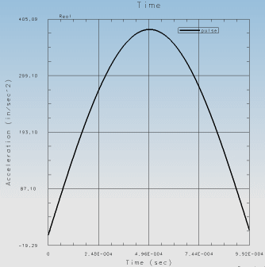
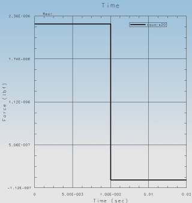
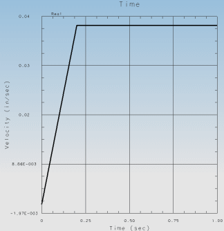

激励是应用于模型的外部载荷，旨在分析模型对载荷的动态响应，例如车辆轮胎撞击突起时的撞击特征。
激励可以是：
由节点、方向和力函数定义的节点力。
由节点、方向以及位移、速度或加速度函数定义的节点强迫运动。
通过缩放您在解法中预定义的载荷来定义的分布式载荷激励（仅“瞬态”、“频率”或“随机”事件）。
应用于单个节点的恒定速度冲击或跌落冲击（使用自动生成的半正矢函数）。
定义为一般旋转力或相对于给定轴的非平衡旋转质量的旋转力（仅“频率”事件）。
您可以使用 NX 函数和图形实用程序创建动态函数以用作您事件的激励。有关创建函数的一般信息，包括详细步骤，参见函数和图形帮助。
除了 NX 函数和图形工具外，还可以使用响应仿真实用工具，这个实用工具提供了有用的函数命令，比如：
轻松创建激励函数，比如脉冲、随机信号和 ramp 函数。
位移、速度和加速度数据转换
时间、频率、SRS 和 PSD 数据转换
插值
包络线
方程组合
节点结果的 NX Nastran Punch 文件转换
下图为使用响应仿真实用程序创建的函数。
|

|
|

|
|

|